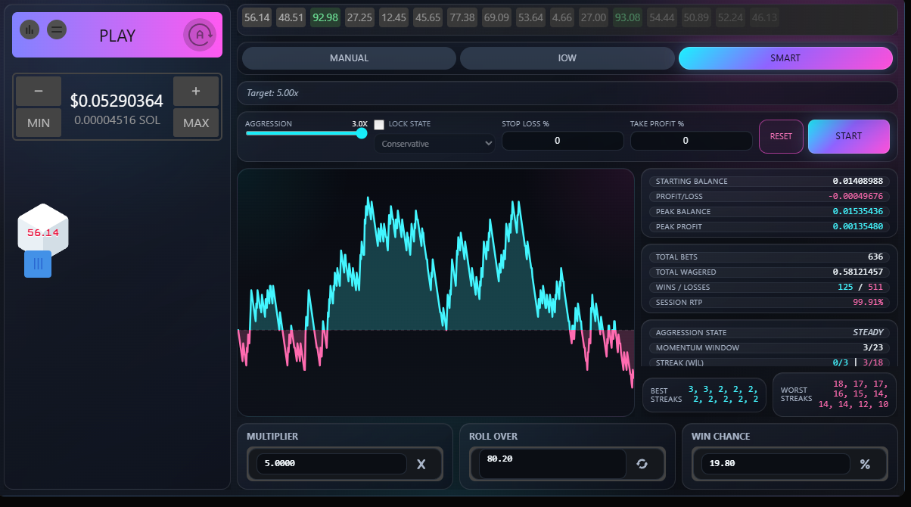

IOW / Smart
Three playstyle modes for Stake & Nuts, Limbo & Dice — with a compact HUD and a big live profit graph baked right into the game.
This script features 3 playstyle modes for Stake and Nuts, Limbo and Dice. Manual, IOW (Increase on Win), and Smart.
Manual mode is self-explanatory, only it allows the user to run Dice or Limbo on auto using the script-injected Start button.
IOW mode allows you to set an increase percentage to your bet after a win, and a number of losses in a row before resetting back to base bet. You can also set the number of wins needed (before the loss reset occurs) to reset back to base bet. If you hit the win-reset value, the HUD will flash letting you know you hit the win reset each time.
Smart mode is a different beast. This mode automatically sets the bet size based on these factors: Balance, Multiplier, and Aggression value (the sliding bar). Just set these three values to your liking, and send it.
Oh yeah, did I mention you can have very detailed statistics of your session and a large built-in graph right into the game's UI?
Screenshots


Install
IOW / Smart ships inside the unified bundle. Head to the install guide, pick your platform, and grab the one download link. After install, toggle IOW / Smart on from the in-page control panel.